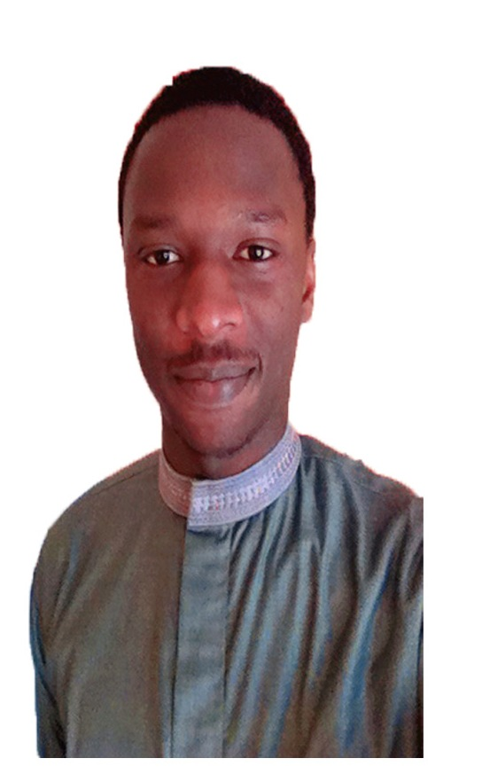

AKN CONSULTING srl est une entreprise informatique de droit sénégalais au capital de 50.000.000 de FCFA. Elle a été fondée en 2021 par Mr Ndiaye Abdoul Karim, un jeune ingénieur en informatique d'origine sénégalaise résidant en Italie.
Aprés plusieurs années dans le secteur en occupant des fonctions importantes dans de grandes entreprises européénnes, il s'est fixé comme objectif de contribuer au développement de son pays d'origine le Sénégal.
AKN CONSULTING offre plusieurs services, nous proposons des applications et site web dynamiques dans tout les domaines.
Nous disposons aussi d'un store à Dakar, pour la vente de divers produits informatiques. Nous assurons la vente, l'installation et la maintenance de tous matériels acquis dans nos boutiques. Nous proposons également des services en analyse décisionnelle plus connue sous le nom de business intelligence. Nous collectons vos données grace à des outils performants, les meilleures et les plus utilisés sur le marché mondial, nous transformons les données afin de produire des rapports et tableaux de bords de nouvelle génération, pour vous accompagner dans la prise de décision basée essentiellement sur des données sures et fiables.
La présente application est une de nos productions, elle a été pensée, pour produire des documents administratifs en un temps record.
Ce service permet d'attribuer à chaque citoyen un ID CITIZEN, qui est un identifiant unique, généré automatiquement lors de l'inscription. Cet identifiant peut ensuite etre utilisé pour s'identifier et demander des documents tels que le certificat de résidence, extrait de naissance, certificat de domicile ect. En collaboration avec votre commune, nous mettons en place cet outil, en collectant les données nécessaires pour garantir une experience utilisateur optimale.
Notre but est de vous fournir des services digitaux afin de simplifier vos procédures administratives sans faire des heures voire des jours d'attente. Nous vous invitons à vous inscrire et bien conserver votre ID CITIZEN pour vos futurs opérations.
Ensemble pour un avenir meilleur!